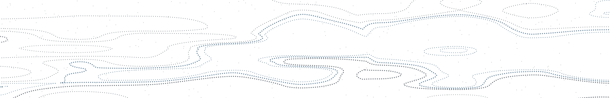

Asset location
- Owner
- Driftwood
- Touches
- Investments · Taxes
- Next decision
- September
Open
Affluent households rarely lack investment options. They lack a single party responsible for the seams: the tax consequence of a rebalance, the estate consequence of a title, the entity consequence of a move.
Driftwood is that party. We do not replace your CPA or your counsel. We convene them, hold the register of open decisions, and read the whole after-tax system as one, so the second-order effects are chosen rather than inherited.
Between reviews, nothing is idle.
Eight matters are already being carried — each one with the systems it touches, a person responsible, and the date it is next examined. They stay open until they are resolved and dated. Not tasks. Not reminders. The decisions themselves.
Open
Waiting
Monitoring
Future event
Resolved ✓
Resolved ✓
Illustrative sample entries, a fictional household, not client data. A live register typically runs longer. The Annual Review's opportunity table and the Manual's open matters are scoped views of this one record.
See the full Opportunity Register →One household, carried end to end: a worked example. The register feeds the record it is kept in: the Wealth Operating Manual, the Decision Register, and the Annual Wealth Operating Review.
Who this is for Households whose financial lives have outgrown a single adviser: several accounts, an estate plan, and decisions that touch each other. Most often an operating business or concentrated equity, and income or property that crosses a state line — frequently Illinois, where an estate is exempt only to $4M.

Begin with a review, not a proposal.
We inventory what exists, name what is uncoordinated, and hand you the register. If there is nothing worth coordinating, we will tell you that.
The review produces your Wealth Operating Manual: the register, the owners, the dependencies, and the review dates, held in one document.

Driftwood Wealth